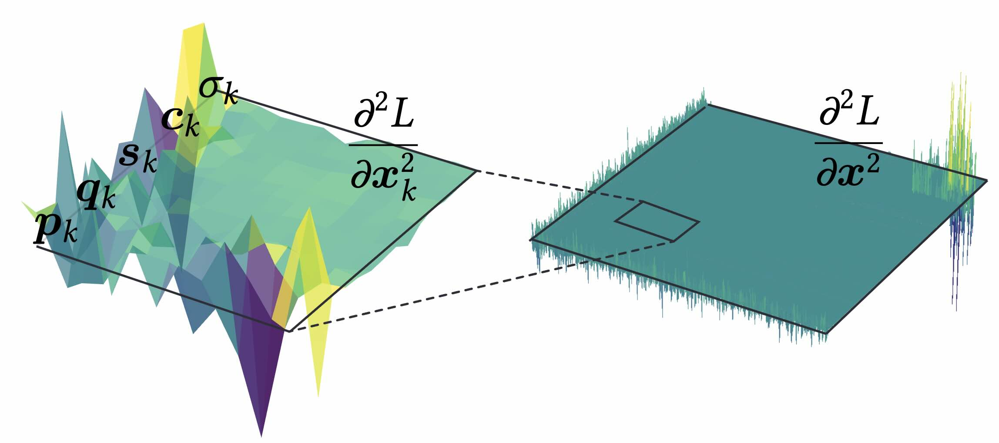
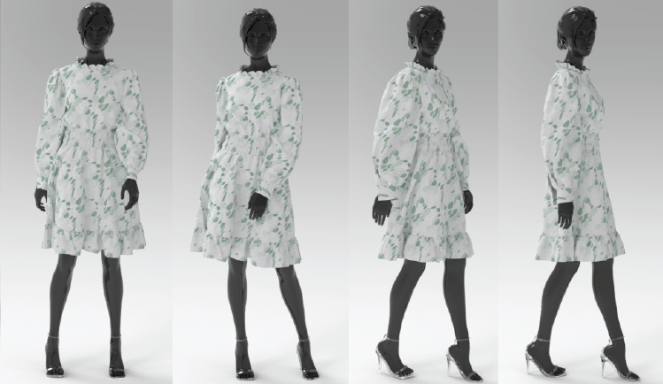
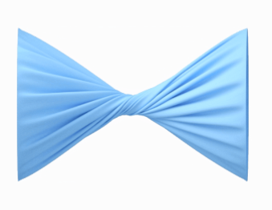
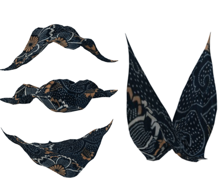
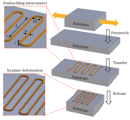

Hi, there!
My name is Zixuan (Vicky) Lu. I am a second-year Ph.D. student at The University of Utah, Kahlert School of Computing, supervised by Prof. Yin Yang.
I received my M.Eng. degree from the Institute of Software, Chinese Academy of Sciences (ISCAS) in June 2024, co-advised by Prof. Xiaowei He, Prof. Xuehui Liu and Prof. Xueyang Zhu. Before that, I earned my B.Eng. in Theoretical and Applied Mechanics from the University of Chinese Academy of Sciences in July 2021.
My research interests are Physics-based Animation, High-performance GPU Computing, and numerical methods for Computer Graphics.
I am always open to discussions and collaborations — feel free to reach out anytime!
Experience
- Feb 2026 — Present. Research Intern, Tencent North America, LightSpeed Studios. High-fidelity hair card to strand reconstruction, supervised by Dr. Kui Wu.
- Aug 2024 — Present. Ph.D. Student, Kahlert School of Computing, University of Utah. Advised by Prof. Yin Yang.
- Apr 2024 — Aug 2024. Research Intern, Style 3D, Hangzhou. Rig-driven 4D point cloud garment synthesis, supervised by Dr. Zhendong Wang.
- Sep 2021 — Jun 2024. M.Eng. Student, Institute of Software, CAS. Co-advised by Prof. Xiaowei He, Prof. Xuehui Liu, and Prof. Xueyang Zhu.
- Sep 2017 — Jul 2021. B.Eng. in Theoretical and Applied Mechanics, University of Chinese Academy of Sciences. Undergraduate thesis research at the Institute of Mechanics, CAS.
Publications
-

NEW High-performance CPU Cloth Simulation Using Domain-decomposed Projective Dynamics
ACM Transactions on Graphics, SIGGRAPH 2025. Best Paper Honorable Mention. Selected for the Technical Papers Trailer.
[Project Page] [ACM DL] [PDF] [Video] [Two-Minute Paper]
-
NEW JGS2: Near Second-order Converging Jacobi/Gauss-Seidel for GPU Elastodynamics
ACM Transactions on Graphics, SIGGRAPH 2025.
-

NEW 3DGS²: Near Second-order Converging 3D Gaussian Splatting
SIGGRAPH 2025 (Conference Track).
[Project Page] [ACM DL] [arXiv] [PDF]
-

Efficient GPU Cloth Simulation with Non-distance Barriers and Subspace Reuse
ACM Transactions on Graphics, Vol. 43, No. 6. SIGGRAPH Asia 2024.
-

Projective Peridynamic Modeling of Hyperelastic Membranes with Contact
IEEE Transactions on Visualization and Computer Graphics, TVCG 2023. Presented at CVM 2023.
CN Patent under review: CN2022117179422.
-

Virtual Fiber-based Constitutive Model for Anisotropic Material Design
Journal of Computer-Aided Design & Computer Graphics, Vol. 36, No. 4, 2024. Presented at Chinagraph 2022.
-

Mechanics of Nonbuckling Interconnects with Prestrain for Stretchable Electronics
Applied Mathematics and Mechanics (English Edition), 2021.
Invited Talks
-
Dec 2025.
2025 Ph.D. Student Lecture on Social Robotics,
Xiamen University, CDMC.
Topics: High-performance CPU Cloth Simulator. -
Sep 2025.
GAMES Webinar Series 380.
Topics: High-performance CPU Cloth Simulation Using Domain-decomposed PD. [Download] -
Sep 2025.
Utah Graphics Seminar, University of Utah.
Topics: Static and Dynamic Reordering for Physics-based Simulation. [Download]